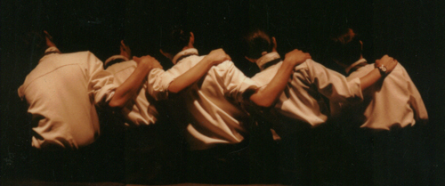

La Asociación Colectivo Teatral Matacandelas es una entidad sin ánimo de lucro creada en el año de 1979 y elevada a la categoría de Patrimonio Cultural de la Ciudad de Medellín en 1991. En sus 46 años de existencia ha producido más de 60 montajes, entre ellos unos 12 pertenecientes al teatro de títeres.
Actualmente cuenta con 21 obras de repertorio:
- Incertidumbre - De la mano de Bertolt Brecht, Boris Vian y Tristan Tzara
- J'aime - Hice de la poesía un crimen perfecto, ¿le parece poco - De Jaime Jaramillo Escobar
- En el espectro visible Matacandelas y La Pascasia
- Antínoo de Fernando Pessoa.
- Blanca Nieves
- Perspectivas ulteriores De Franz Xaver Kroetz
- Primer amor De Samuel Beckett
- La casa grande De Álvaro Cepeda Samudio
- Ego Scriptor de Ezra Pound
- Las danzas privadas de Jorge Holguín Uribe
- El Mediumuerto o ¿pero no se supone, Roger, que los médiums no se mueren? de José Domingo Garzón
- Dicha y desdicha de la niña Conchita.
- 4 mujeres de Edgar Allan Poe.
- La caída de la casa Usher - Velada Gótica I de Edgar Allan Poe.
- Fernando González - Velada metafísica.
- El hada y el cartero
- Juegos nocturnos 2 - Velada ´Patafísica ¿de Alfred Jarry?
- Medea de Lucio Anneo Séneca.
- Los ciegos de Maurice Maeterlinck.
- La chica que quería ser dios. Creación colectiva sobre Sylvia Plath.
- Los bellos días de Samuel Beckett.
- Los diplomas de Andrés Caicedo.
- Angelitos empantanados de Andrés Caicedo.
- Juegos nocturnos I de Jean Tardieu.
- O marinheiro de Fernando Pessoa.
- Pinocho - Fiesta y HechiZerías
Estas tres últimas, espectáculos infantiles creados por nuestra agrupación.
El Teatro Matacandelas ha ganado en los últimos años un amplio reconocimiento en el ámbito nacional e internacional, prueba de ello ha sido la invitación a los Festivales Internacionales de Teatro de Cádiz, Bogotá y Manizales así como la gira por algunos países europeos (Portugal, España, Francia y Bélgica) efectuada en el año de 1993, la temporada realizada en Guatemala en 1994, la participación como invitado especial al Festival de teatro de la frontera con presentaciones en las ciudades de Cúcuta y San Cristóbal (Venezuela) en 1995, la temporada en el Teatro Olimpia de Madrid en junio de 1997, la participación en el Festival internacional de Almada (Portugal), la Muestra internacional de teatro de Rivadavia (España) también en 1997, la invitación a Mayo teatral 2001, 2004 y 2010 en Cuba, la participación en el Festival internacional de teatro y la Feria del libro de Santo Domingo, República Dominicana en 2006 y 2007, el Festival internacional de Lima, 2006, además de diferentes participaciones en el Festival internacional de Manizales y el Festival iberoamericano de Teatro de Bogotá.
De la aceptación del Teatro Matacandelas dan cuenta las más de doscientas funciones anuales que en promedio realiza el grupo, así como los talleres, veladas artísticas e intercambios que se efectúan constantemente.
Estamos ubicados en el centro de Medellín (Colombia) en la calle 47 No.43 - 47 (Bomboná con Girardot), donde ofrecemos temporadas permanentes de teatro de jueves a sábado a las 8:00 p.m. y títeres los domingos a las 11:30 a.m.
Le esperamos...
TEATRO MATACANDELAS
Calle 47 No. 43 - 47 Tel: (+57-4)2151010 Telefax: (+57-4)2391243
Medellín - Colombia
matacandelas@matacandelas.com

Si algo ha caracterizado estos años de hacer escénico del Teatro Matacandelas es su insobornable falta de estilo, el tanteo con nuevos y viejos lenguajes, la carencia de un dogma, su clima de exploración permanente, considerando que sobre el tablado las certezas estéticas se hayan empalidecidas por las maravillosas dudas. Lo que ayer pudo significar un seducible (y funcionable) camino para muchos, hoy puede convertirse en un obstáculo para la libertad creativa.
Nuestro repertorio señala a rápido golpe de ojo en todos sus autores y tendencias sus saludables contradicciones: T. Williams, Pessoa, Ionesco, Cocteau, Andrés Caicedo, Beckett, Lorca, Brecht, Aguilera Garramuño y, por supuesto, las dramaturgias nacidas en el grupo, que conforman una mitad del total de puestas en escena. Autores, como se ve, de distintas instancias poéticas y diversos estilos que convergen en una actividad reforzada por tres disciplinas: teatro, títeres y música. Dirigidas a públicos distintos, destacándose la proyección infantil.
En la circunstancia cultural de nuestra sociedad donde ha predominado el conocimiento del arte representativo de una manera primaria, de oídas o como en la mayoría de los casos, por referencias literarias académicas, no es extraño que la praxis teatral aparezca como desconocida o incomprensible, cuando no subestimada, pero también, y por ello mismo, como una tarea artística de alentadoras posibilidades en su devenir; quiere decir que de esta nueva generación va a depender en lo sucesivo la formación y el gusto dramático. Se hace indispensable considerar que el teatro todavía es una propuesta joven para el país.
Dócil a este pensamiento el Teatro Matacandelas ha soslayado los alcances de su actividad escénica en un amplio tiempo, descreyendo de los éxitos momentáneos o afanando una situación que más que a un solo grupo, implica el espectro teatral nacional. ¿Se trata -le preguntaban a Jean Vilar- de devolverle al pueblo el gusto por el teatro? No lo ha perdido nunca -respondía lacónico Vilar- la preocupación es el acceso.
Si el acceso ha sido una contribución del Teatro Matacandelas lo dirán mejor las 5.153 funciones públicas realizadas en estos años de existencia; momento donde en los últimos años -desde su sala estable- incrementa sus veladas anuales a 250.
Exploración y proyección en circunstancias muy específicas, para un público que urge experiencia directa con el teatro.
Es pues el sondeamiento a la teatralidad, a la investigación, a la experimentación lo que así mismo nos ha permitido una constante comunicación con el espectador. No es la búsqueda como monólogo interior divorciado del entorno donde al público no se le compromete con el riesgo y la aventura.
Sobre todo y más allá de cualquier presupuesto teórico o ideológico, nuestro ejercicio es el clima en el cual, las personas que nos hemos asociado bajo el nombre común de Matacandelas, nos divertimos.
Y el público a menudo suele pasarla bien...